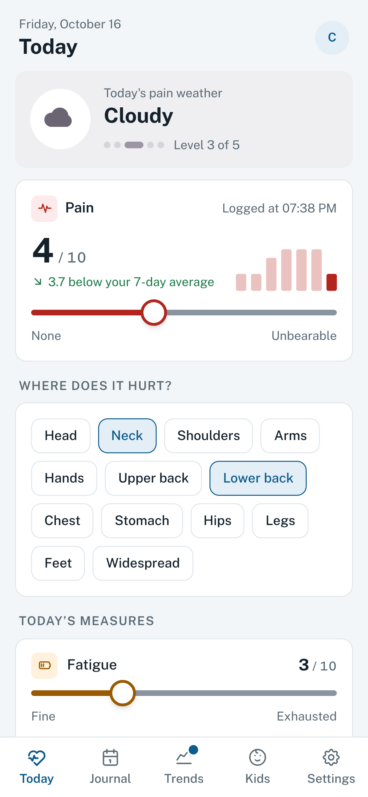
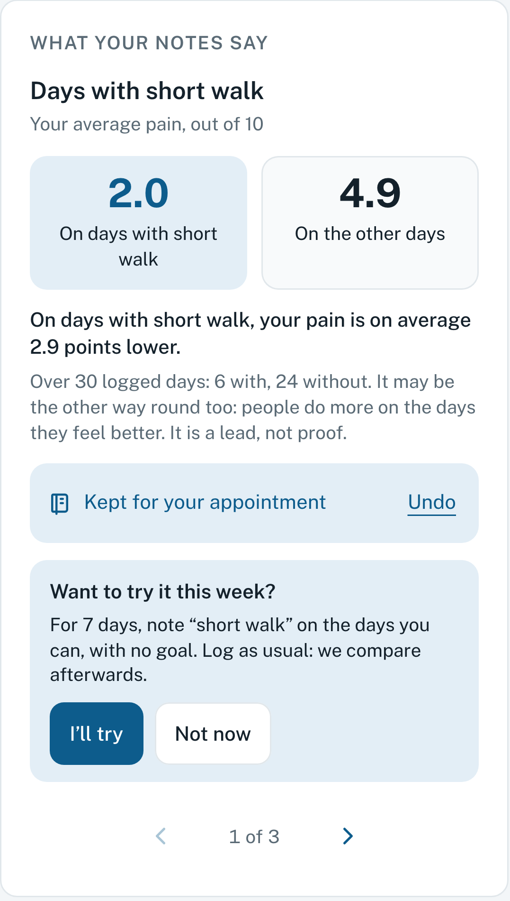
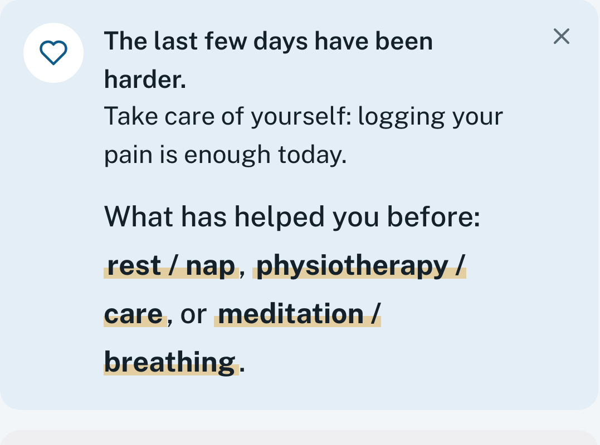

Your pain:
what makes it worse,
what eases it.
Then you act.
OUCH is a diary for fibromyalgia and other chronic pain. You log your day in under a minute. Over the weeks, your notes show what seems to make your pain worse and what helps, so you can act on it.

See what makes it worse
Sleep, stress, yesterday’s activity: OUCH compares your days and shows what comes back when things get harder. One lead at a time, with the days behind it.
See what helps
A short walk, a hot bath, stretching… whatever you noted as helping, with your days with and without it side by side.
Try it for a week
A lead speaks to you? Start a trial: you log as usual and OUCH compares your days with and without. It proves nothing, but it helps you see more clearly.
Talk it over with your doctor
The leads you keep go into the report (2 pages, or 5 for a pain clinic), with your curve and your treatments. It describes your data without drawing conclusions for you.
Even on days with no energy
When things are hard, the screen shrinks to your pain. One number is enough: the diary keeps going.

